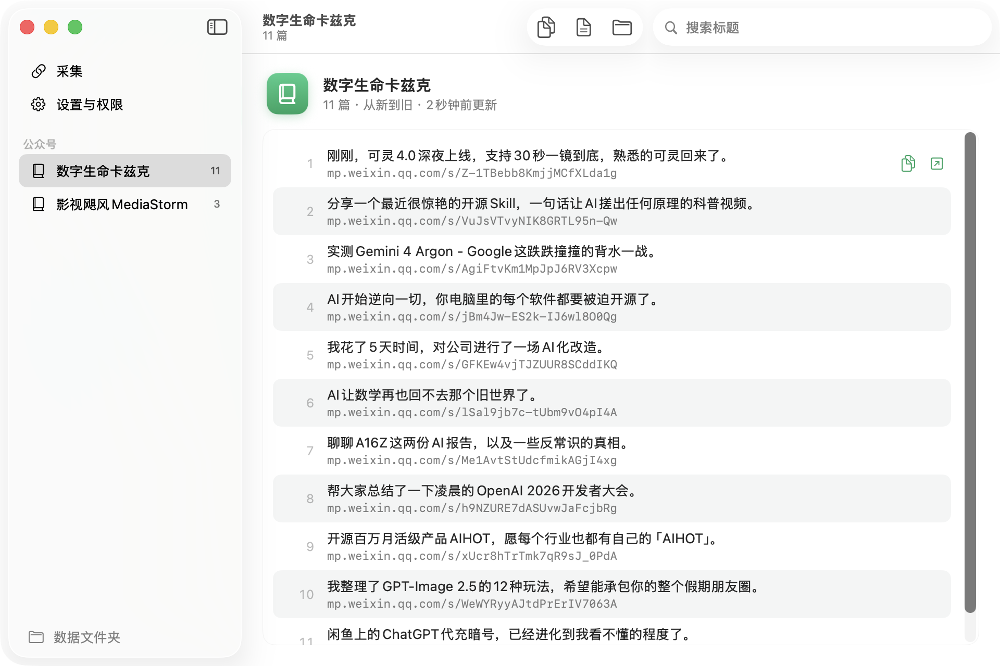
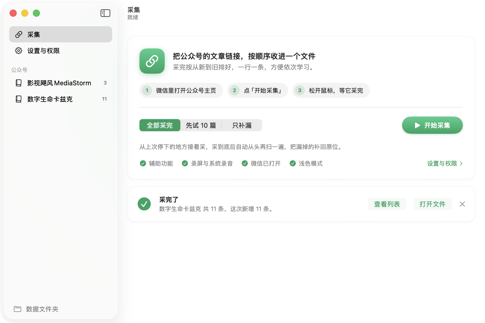
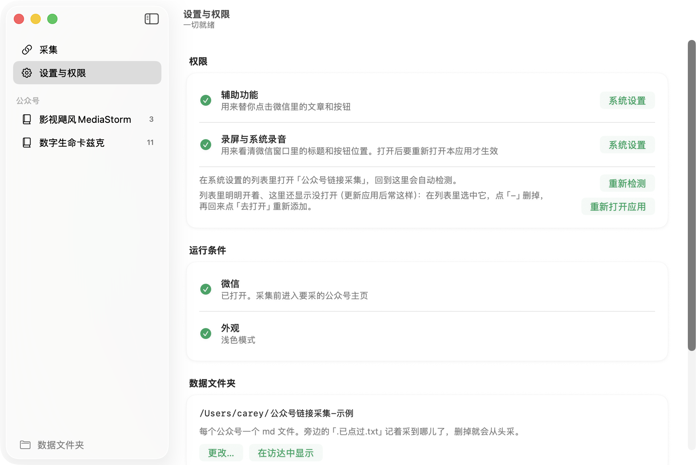

把一个公众号的文章链接，按顺序收进一个文件
在微信桌面版里自动逐篇点开文章、复制链接，从新到旧一行一条写进 md。点一下开始，松开鼠标等它采完，拿去依次学习。
Mac：WXLinks-mac.dmg Windows：准备中 全部版本

采完得到什么
一个公众号一个 md，一行一条链接
- 按主页列表的顺序，从最新一篇排到最早一篇，文字帖也能采。
- 采到底以后自动从头再扫一遍，漏掉的补回原来的位置；已经有的不会重复写。
- 停了再开始，从停下的地方接着采。几百篇可以分几次采完。
- 应用里能按标题搜，双击用浏览器打开，一键复制全部链接。
1https://mp.weixin.qq.com/s/Z-1TBebb8KmjjMCfXLda1g 2https://mp.weixin.qq.com/s/VuJsVTvyNIK8GRTL95n-Qw 3https://mp.weixin.qq.com/s/AgiFtvKm1MpJpJ6RV3Xcpw 4https://mp.weixin.qq.com/s/jBm4Jw-ES2k-IJ6wl8O0Qg 5https://mp.weixin.qq.com/s/GFKEw4vjTJZUUR8SCddIKQ 6https://mp.weixin.qq.com/s/lSal9jb7c-tUbm9vO4pI4A 7https://mp.weixin.qq.com/s/Me1AvtStUdcfmikAGjI4xg …
怎么用
三步，每篇大约 4 秒
打开公众号主页
在微信桌面版里点进要采的公众号，停在有「全部 / 贴图 / 文章 / 视频号」的那一页。
点「开始采集」
可以选全部采完、先试 10 篇，或者只补漏。
松开鼠标等它采完
它会替你操作微信。误碰鼠标会暂停，停手 5 秒自动继续；鼠标甩到屏幕左上角立即停止。
截图
点一下开始，缺什么它会告诉你


安装
第一次打开，系统会拦一下
这是没有付费签名的开源小工具，macOS 第一次会提示「无法验证开发者」。按下面做一次就好，以后正常双击。
装好并打开
- 打开下载的 WXLinks-mac.dmg，把「公众号链接采集」拖进「应用程序」。
- 在「应用程序」里双击打开，系统提示拦截时点 完成。
- 打开 系统设置 → 隐私与安全性，往下翻到「安全性」，点 仍要打开，输入开机密码。
如果提示「已损坏，无法打开」，打开「终端」运行这行，再双击打开：
xattr -dr com.apple.quarantine /Applications/公众号链接采集.app打开两个权限
- 应用里点「设置与权限」，辅助功能 和 录屏与系统录音 各点一次「去打开」。
- 在系统设置的列表里打开「公众号链接采集」的开关。
- 回到应用点 重新打开应用，两个都变成绿勾就可以开始了。
替你点微信要「辅助功能」，看清屏幕上的标题和按钮要「录屏」。只对这个应用生效，随时能在系统设置里关掉。
常见问题
用之前想知道的
它是怎么拿到链接的？会把我的数据传到网上吗？
它照着你手动操作的样子来：截屏认出文章标题的位置，点开文章，点右上角「···」里的「复制链接」，再关掉。认字用的是 macOS 自带的文字识别，全程在你的电脑上完成，不联网、不调用任何 AI 服务，采到的链接只存在你自己电脑的文件夹里。
会不会被封号？
自动操作微信不符合微信的用户协议，存在被限制账号的可能，请自行判断、自担风险。工具每篇之间会停顿，每 40 篇歇半分钟，尽量模仿正常浏览的节奏，但不能保证没有风险。
采 700 篇要多久？
每篇大约 4 秒（文章加载慢的会多等），700 篇加上翻页和最后补漏，一个小时左右。可以分几次采，停了再开始会接着采。
为什么要用浅色模式？
程序靠颜色认出微信标签栏里当前打开的是哪一页，目前只适配了浅色模式。深色模式下应用会提醒你切换。
采集时能用电脑做别的事吗？
不能。它要用鼠标操作微信，而且靠截屏看画面，所以采集时微信要在最前面、不能被别的窗口挡住。你一动鼠标它就暂停，停手 5 秒后自动继续。
有 Windows 版吗？
正在做。Windows 版微信的界面和 Mac 不一样，要单独适配，做好后会在这个页面提供下载。